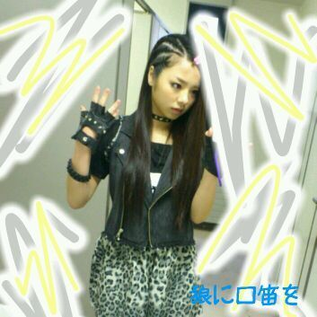
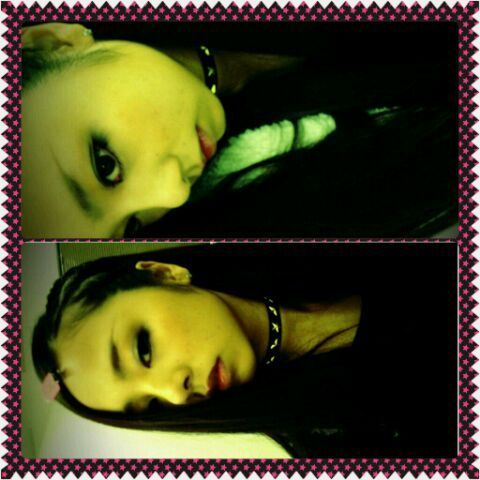

ほいっ♪
こんやちくわ。...゜_゜)
リバーソンまひろってぃー♪
です☆
あっ、川村真洋です*⌒‐⌒*
今日は
な、なななんと、
『おいでシャンプー♪』
『狼に口笛を♪』
『偶然を言い訳にして♪』
をお台場の近く、
みちのく合衆国ライブで
皆様))の前で、
初披露してきましたっ)))!!
どうでしたでしょうかぁぁ
(ToT。)?
まひろは、本間に
ステージに立つ前から
皆様の暖かい声援に
感動していました(ノ_\。)
雨の中、本当に
ありがとうございました〃ω〃

↑これは
狼に口笛を♪の
PVでの衣装です・ω・))

↑この写真さんたちも
PV撮影の日に
撮ったやつだよ・▽・♪
ぢゃあ次の記事は
質問返しやってくってば
ーーーー＼(^o^)／
最後に
ずっとずっと
大好きで憧れている
福原美穂さん♪に
今日会えましたっ(>_<)
一生忘れないんだから♪
本当にやばかったです!
本間にかっこよくて、
存在じたいに
迫力がありました。>_<
人と会って
号泣したのは
生まれて初めてでしたω
色々とこの感情を
書きたいけど、
大事に自分の心の中に
しまっておきます(⌒‐⌒)
ありがとうございましたあっ!!
以上っ))
ろってぃー♪でした*・ω・*
のし。